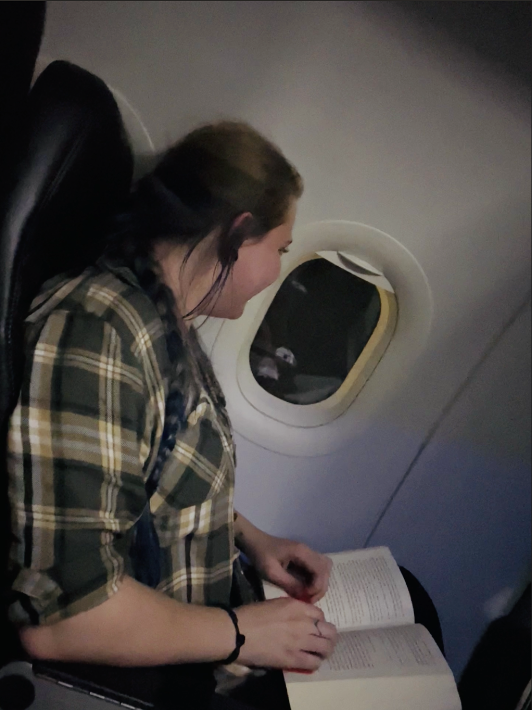
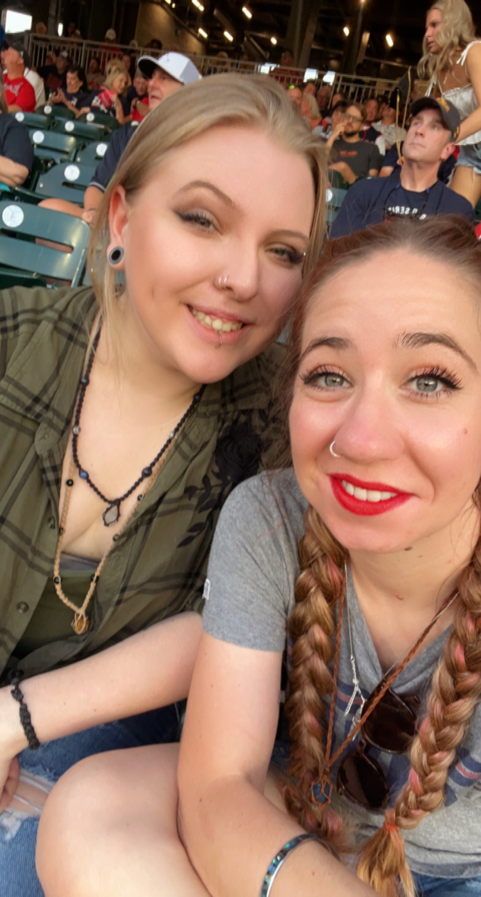

I met Mya two years when she started working at the bar that I occasionally worked at. It took a few months for us to meet, and when we did it was under less-than-desirable conditions, but we were instantly best friends and have been ever since. I instantly knew that she would be one of those people that made a huge impact on my life. You’ll never meet a more loving or kind person who’s always willing to lend a hand even if she needs one herself. We first bonded over our mutual love of art and reading. We’ve spent many late nights talking about life, books we’ve read, and our goals and ambitions. She loves all things spiritual and healing and at any point in time you’ll see her wearing no less than three crystals at a time. She loves explaining what each crystal is supposed to do or help with anyone who will listen. She’s a lover of all things plants and has recently got me hooked on them too. I’ve never been able to keep a plant alive, but she has somehow managed to help me not kill a few. When she’s not reading or writing she’s studying tarot and loves to give people readings. She’s very passionate and knowledgeable on the subject and I love learning about something I never would have been interested in if it wasn’t for her. She’d love to travel but hasn’t really had the opportunity. Last summer I got to witness her take her first plane ride and trip out of her home state. Her other passion is helping people and is waiting to start college in the fall and work toward her degree in psychology. Anyone is able to go through what she has been through and make it out of rock bottom at such a young as is destined for great things. I can’t wait to see where her ambitions and the future take her.